maiavm-desktop · mobile blueprint · 2026-10-06 · fix/host-modal-note (#269, top of a stack of thirty-five PRs from #226, on main @ f2e7382) · pass 3 + gap loop + morning follow-up
The phone app now reaches what the web app does
Nub Agent ships one React app in two shells. Desktop-width browsers and Electron get the full app; phones (and the Android app) get a lighter phone shell. Before these two passes the phone had no Routines, search only found agents, shared links landed on the home list, and most of Settings, chat history and the task board were desktop-only.
Every number and screenshot below comes from a local run in Chrome against the app's offline demo mode, driven by the harness in tools/blueprint/. Requests to anything other than the local dev server were blocked, so no account, VM or pairing was involved.
Overnight gap loop 2026-10-06
From 00:22 to 06:00 ET a self-paced loop found one provable gap at a time and fixed it on its own branch. Each fix has a harness check that failed before and passes after, or a unit test that fails without the fix where the demo can't show the bug. The full regression run (TypeScript, the unit suite and every harness script, one after another) was green before each PR. Nothing was merged. The 29 PRs form one stack from main @ f2e7382 and merge in the order below. A separate Settings loop ran alongside (PRs #224 to #253), and it noted that #224 with #234 and #238 with #250 need a small rebase when the second of each pair lands.
The worst five
- The desktop notifications list was invisible (#248). The glass header formed its own stacking context, so the chat painted over the open list. Every earlier check passed, because none hit-tested the list.
layers-on-top.mjsnow hit-tests 14 floating layers. - Enter on Cancel deleted the chat (#229), synced to every device with no undo.
- "Save & run now" then Save could silently drop the second save (#240). The routine stayed paused on the agent.
- Any Esc denied the agent's pending request (#249), including the one used to close a menu.
- A slow file read could land in the wrong preview (#230), and Save would then write it into the wrong file.
Merge order
| PR | Branch | What it fixes |
|---|---|---|
| #226 | fix/preview-stale-guard | A closed file preview stopped asking about edits that were already discarded. |
| #227 | fix/teardown-flake | Test-only: removed the CI teardown flake that failed #223's first run. |
| #229 | fix/delete-dialog-enter | Enter on Cancel no longer deletes the chat. Esc also closes the dialog before the panel behind it. |
| #230 | fix/preview-load-race | A slow read can no longer show file A under B's name, or let Save write A's text into B. |
| #232 | fix/palette-enter-debounce | ⌘K Enter typed fast opens what you typed, not a create flow. |
| #233 | fix/palette-focus | Closing ⌘K gives focus back, and Tab stays inside it. |
| #235 | fix/delete-dialog-title | "Delete conversation?" names the chat as its row does. |
| #236 | fix/group-editor-reset | A roster refresh no longer wipes a half-made group. |
| #237 | fix/dark-toast | The app toast is readable in dark mode (1.09 → 17.32:1) and is announced. |
| #239 | fix/desktop-dark-contrast | Agent and @mention chips are readable in dark mode. Adds the desktop contrast sweep. |
| #240 | fix/routine-save-baseline | A second save after "Save & run now" reaches the agent. It used to leave the routine paused. |
| #242 | fix/esc-layers | Esc closes the bell list or profile card before the panel under it. |
| #243 | fix/routine-switch-focus | Pausing a routine from the keyboard keeps focus. |
| #245 | fix/files-refresh-query | Refresh in Files keeps the search. |
| #246 | fix/mark-read-race | A refresh already in flight can't undo "Mark all read". |
| #248 | fix/bell-unread-label | The desktop notifications list is visible. It used to be drawn under the chat. The bell also announces the unread count. |
| #249 | fix/esc-denies-permission | An Esc meant for a menu no longer denies the agent's request. Adds the floating-layer hit-test sweep. |
| #251 | fix/slash-exact-match | "/new" + Enter starts a conversation, not a new agent. |
| #252 | fix/message-toolbar-blur | Message toolbars hide again after keyboard focus moves on. |
| #254 | fix/message-menu-keyboard | The right-click message menu works from the keyboard. |
| #255 | fix/phone-row-menu-keyboard | The phone's chat row menu works with a keyboard. |
| #256 | fix/sign-in-poll-backoff | A network blip no longer ends web sign-in or invite redeem. |
| #257 | fix/telegram-connect-focus | "Connect with Telegram" takes and keeps focus, as a modal. |
| #258 | fix/web-sign-in-code-entry | Sign-in shows plain errors, the code box keeps focus, and a bad code gets feedback. |
| #259 | fix/sign-in-paste-race | A pasted sign-in code isn't replaced by a slow "Getting a code…". |
| #260 | fix/kanban-busy-per-task | Task board: each task's busy state is its own, and a retried attachments load clears its error. |
| #261 | fix/agent-info-resize-refused | A refused resize in Agent info says so instead of looking scheduled. |
| #262 | fix/kanban-refresh-stale | After a quick board switch, the old board's tasks can't land on the new one. |
| #263 | fix/quick-reply-chips | A picked quick reply shows its words and retires its chips. |
| #264 | fix/helper-stop-result | Morning: a helper Stop or steer that doesn't reach the agent says so, and a failed steer keeps your text. |
| #265 | fix/agent-chip-touch-size | Morning: the phone's "from <agent>" chip is a 24px touch target. |
| #266 | fix/restore-cat-colors | Morning: the four nubcat colours are back (sky, pink, lilac, green), and group stacks show members in distinct colours. |
| #267 | fix/demo-agent-routines | Morning: the demo's agents live on a VM like real ones, so Agent info counts their routines. |
| #268 | fix/kanban-switch-rollback | Morning: a board switch the agent refuses puts the picker and tasks back. |
| #269 | fix/host-modal-note | Morning: the Ship modal starts clean each time it opens. |
Morning follow-up
The open decisions from the night were made and shipped (#264–#269), and the cat colours that an earlier commit (bdc939b, already on main) had collapsed to sky blue are back. Each demo agent now has its own colour, so all four show:
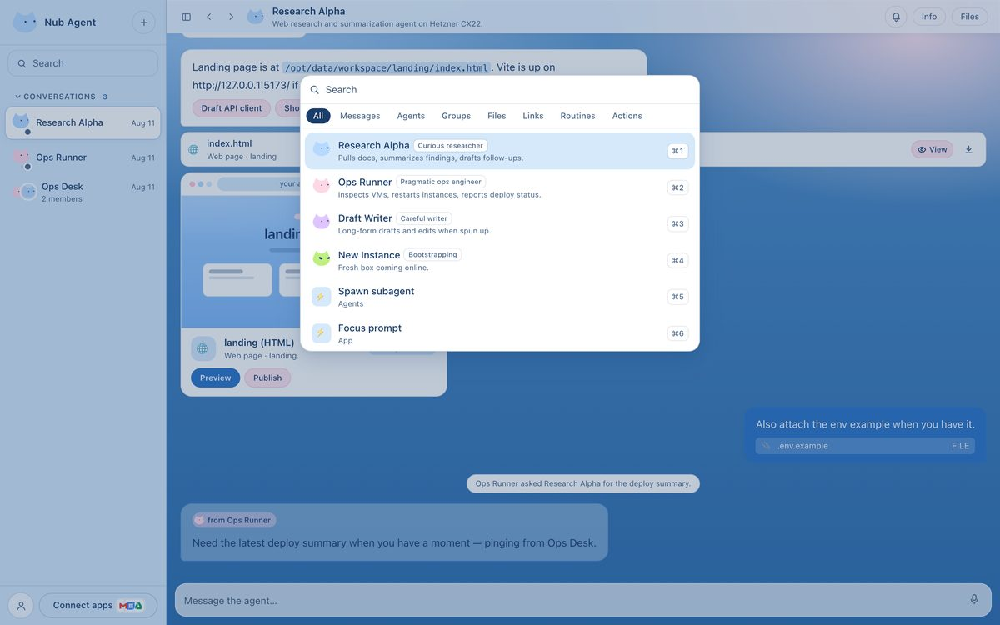
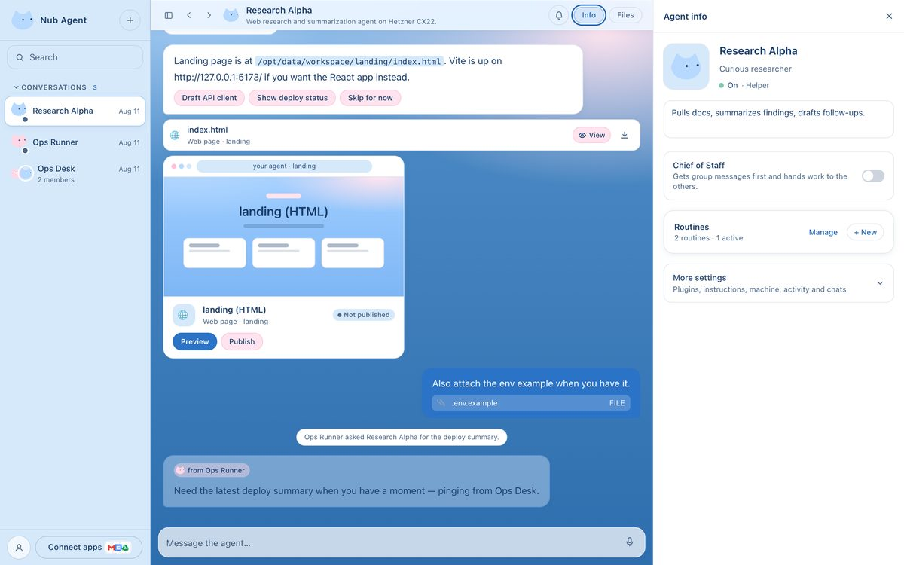
Three code-reading subagents proposed most of these, and each one was reproduced in the browser (or proven by a unit test) before it was fixed. What's still suspected or waiting on a product decision is listed in docs/loop-ledger.md.
Watch it
A 28-second tour recorded by tools/blueprint/walk.mjs at phone size: Routines (pause and resume in place), Find in chat, Agent info, the full Settings panes, search across chats, then the task board.
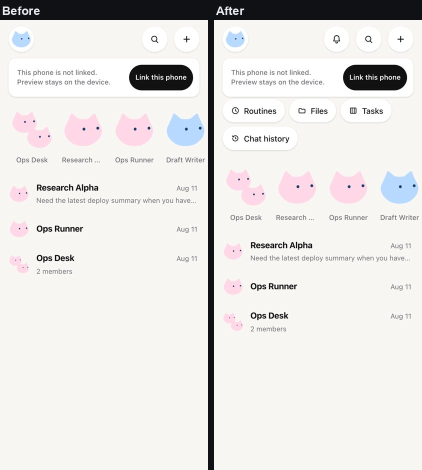
New in this pass pass 3
Pass 3 checked the phone in dark mode, on tablet widths and with a keyboard, and fixed what those checks found. The contrast checks measure the WCAG ratio of every visible piece of text against the first solid background behind it, on six screens in both themes.
- Theme on the phone. Light and Dark are now in the phone's Settings → Appearance, the same setting as desktop Settings → General. It had only been reachable through the full Settings sheet.
- Contrast. All six screens meet 4.5:1 in both themes. The one failure was the Routines page's description, back link and group headings at 3.61:1 on the light sky canvas, desktop included. They now use the darker ink and measure 4.83:1.
- Dark task board. The "assign…" field kept a light box and an unset text colour in dark mode, and overflowed at the 16px touch font size; it now takes the theme's colours and widens on touch screens.
- Keyboard. On a tablet or a phone with a keyboard, ⌘[ / ⌘] go back and forward through visited chats and Alt+↑/↓ move to the previous or next chat, as on desktop. ⌘K, ⌘, and ⌘F came in pass 2.
- Tablets, corrected. Pass 2's roadmap said an iPad showed phone screens stretched wide. That was wrong: an existing rule already bounds the phone shell to a centred 640px column on touch screens over 720px. The harness now measures it (640px with 64px gutters at 768, 97px at 834).
Pass 2: the rest of the roadmap
- Search everything. The home Search button opens the desktop search: messages, agents, groups, routines, files and links. Picking a message opens its chat with that message centred and highlighted.
- Chat history. Search, rename, export and delete the agent's past conversations from any app (Telegram, routines, this app).
- Tasks. The task board, with columns stacked to the phone's width, and new tasks from the phone.
- Routine recipes and templates. A Marketplace recipe opens the routine editor already filled in, and templates create routines on the agent.
- Invite links (
#/invite/<code>) open the invite screen, as on desktop. - Export chat from the long-press menu once the phone is linked.
- Keyboard. On a tablet or a phone with a keyboard, ⌘K opens search and ⌘, opens Settings. ⌘F (find in chat) already worked.
A demo that shows real screens
The offline demo now answers the agent routes these screens read: delivery targets, routine templates, skills, chat apps, chat history, run output, the task board and a small workspace of files (src/lib/mock-dashboard.ts, mock-files.ts, mock-cron.ts). That is why the screenshots show working screens instead of "needs an update". The demo only switches on in a development build in a plain browser tab. In a production build it compiles away: the shipped bundle contains none of its strings (0 chunks, checked after every build).
Pass 1, for reference
- Routines as a full screen, sharing one hook with desktop (
src/lib/use-routines.ts). - Shared links (
#/c/<id>,#/agent/<id>,#/routines, settings, files) open the right screen. - Full Settings on a phone tab strip, and "See usage" from the usage-limit banner.
- Notifications, Find in chat, Files, Hidden chats, and Edit Profile in the long-press menu.
Limits
- Everything ran against the offline demo. A linked phone reads the same screens from the real agent, but that path was not exercised here.
- Export chat appears only for chats the agent keeps a transcript of. The demo chats have none, so it is covered by unit tests (
home-menu-and-shortcuts.test.tsx), not the browser harness. - The invite check reaches the invite screen, which then reports a lost connection: the harness blocks the platform it would redeem against.
- The demo's agents carry hosting-region ids (
fsn1, …) that no real transport produces, so Agent info treats them as local agents and counts only local routines. Its card reads "Nothing scheduled yet" while the Routines page lists the two demo routines. That matches the code's rules for a local agent, so it's a demo-fixture mismatch, not a product bug. It also means the harness can't drive VM-agent-only paths in Agent info. - Product analytics (PostHog) only runs in production builds with a project key. It sends a few named events (a link, a message sent, a routine created or run), app errors, and screen recordings with every word, text box and picture hidden. Recordings carry no console output or request addresses, and heatmaps are off. It never sends message, file or routine text. People can turn it off per device in Settings → Safety. The demo this harness drives never contacts PostHog (
analytics-off.mjs), soreplay-masking.mjschecks the recordings against a production build with a dummy key instead, and answers PostHog's calls itself. The named events are still checked on a preview deploy. - Plugins (MCP) stay off on the web and the phone alike. They need the platform's plugin routes to allow cross-origin calls and a sign-in path that doesn't rely on a desktop-only callback.
Parity table
Desktop-width web app versus the phone shell, for features that work in a browser (Electron-only tools such as the HUD and the local Hermes CLI are left out).
| Feature | Phone before | Phone now | How |
|---|---|---|---|
| Routines page, editor, templates, history | gap | match | RoutinesPage screen, RoutineEditor overlay |
Deep links (#/c, #/agent, #/routines, settings, files, tasks) | gap | match | parseHash on load and on hashchange |
| Search across messages, routines, files | agents only | match | CommandPalette overlay; jump re-centres the message |
| Settings: usage, connections, safety, help | gap | match | SettingsStub overlay with a phone tab strip |
| "See usage" from the usage-limit banner | dead button | match | onOpenSettingsRequest listener |
| Chat history: search, rename, export, delete | gap | match | ChatHistoryPanel overlay |
| Task board | gap | match | KanbanPanel overlay, stacked columns; /kanban slash |
| Notifications bell | gap | match | NotificationsBell phone |
| Find in chat | no trigger | match | Header button dispatches maia:find-in-chat |
| Files browser and previews | gap | match | FilesPanel + FilePreview |
| Hidden chats / unhide | gap | match | MobileHiddenChats sheet |
| Agent info: Routines card and chat links | inert | match | Props passed through MobileChat |
| Row menu: Edit Profile, Export chat | gap | match | Shared sidebarRowMenuItems |
| Marketplace routine recipes | gap | match | onUseRoutine seeds the editor |
Invite links (#/invite/<code>) | gap | match | InviteRedeem takes over until redeemed |
| Theme (light / dark) | full Settings only | match | Appearance card, shared useTheme |
| Keyboard shortcuts | none | match | ⌘K, ⌘,, ⌘F, ⌘[ / ⌘], Alt+↑/↓; the rest open desktop-only panes |
Architecture
One state machine, one history mirror. Screens and sheets are React state in MobileApp; every layer gets a history entry, so the platform's own Back gesture is the only way back.
flowchart LR H["location.hash"] -->|parseHash| A["MobileApp
screen + overlay"] E["nub:open-settings
⌘K · ⌘,"] --> A A -->|pushState / go| N["nav-history
one entry per layer"] N -->|popstate| A A --> S1["RoutinesPage
(screen)"] A --> S2["Search · Settings · Chat history
Tasks · Files · Routine editor
Hidden chats (overlays)"] S1 & S2 --> R["useRoutines and the
desktop components"] R --> C["agent dashboard routes
(linked agent, or demo)"]
Phone shell
src/mobile/MobileApp.tsxHolds the screen and overlay, applies deep links and invites, listens for settings requests and keyboard shortcuts, and lazy-mounts the desktop surfaces.
Shared routine state
src/lib/use-routines.tsList, loading and unreachable state, save, delete, pause and resume, run now, and local drafts firing while the app is open. Used by both shells.
History mirror
src/mobile/nav-history.ts · consume-back.tsKnows the routines screen and seven overlays, so Back closes a sheet first, then the screen.
Jump to a message
src/components/ChatPanel.tsxRe-centres the target while cards above it finish laying out, and stops as soon as the user scrolls.
Offline demo
src/lib/mock-dashboard.ts · mock-cron.ts · mock-files.tsAnswers the agent routes and file reads for the demo. demoAgentActive() is the one switch; it is constant-false in production, so the fixtures compile away.
Harness
tools/blueprint/mobile-parity.mjs, mobile-reach.mjs, themes.mjs, sweep.mjs, web-panels.mjs, routine-editor.mjs, phone-signin.mjs, phone-preview.mjs, phone-touch.mjs, phone-esc.mjs, web-esc.mjs, web-settings.mjs, bell-esc.mjs, preview-guard.mjs, delete-confirm.mjs, palette-enter.mjs, palette-focus.mjs, toast-contrast.mjs, desktop-themes.mjs, routine-resave.mjs, esc-layers.mjs, routine-switch-focus.mjs, files-refresh.mjs, bell-list.mjs, layers-on-top.mjs, slash-exact.mjs, message-toolbar.mjs, message-menu.mjs, phone-row-menu.mjs, telegram-focus.mjs, sign-in-screens.mjs, paste-race.mjs, quick-reply.mjs, analytics-off.mjs, replay-masking.mjs, demo-agent-info.mjs, walk.mjs, and build-report.mjs for this page's test table. It blocks outside requests and refuses to run against another app.
Tour
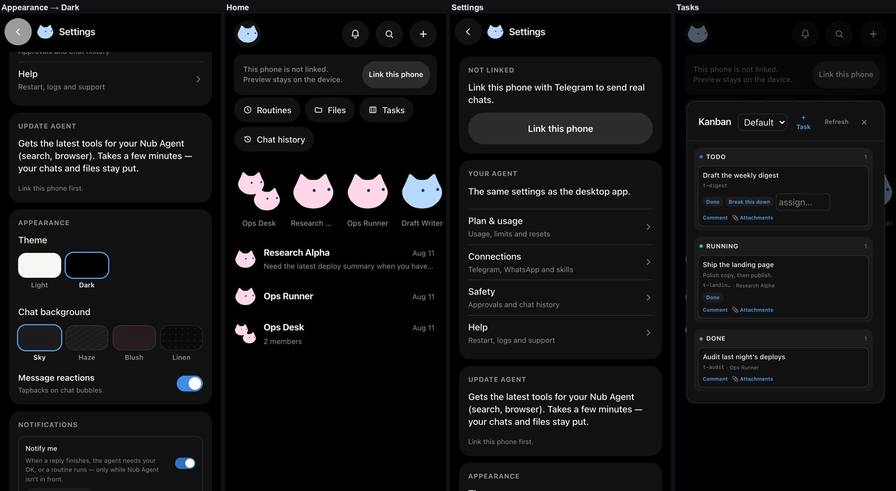
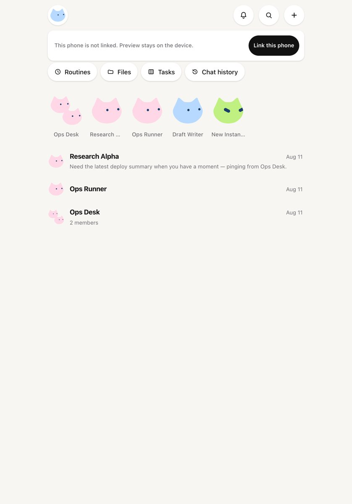
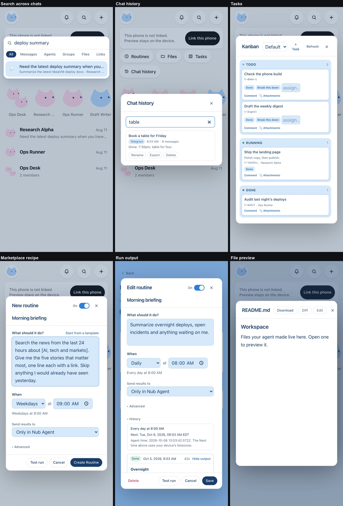
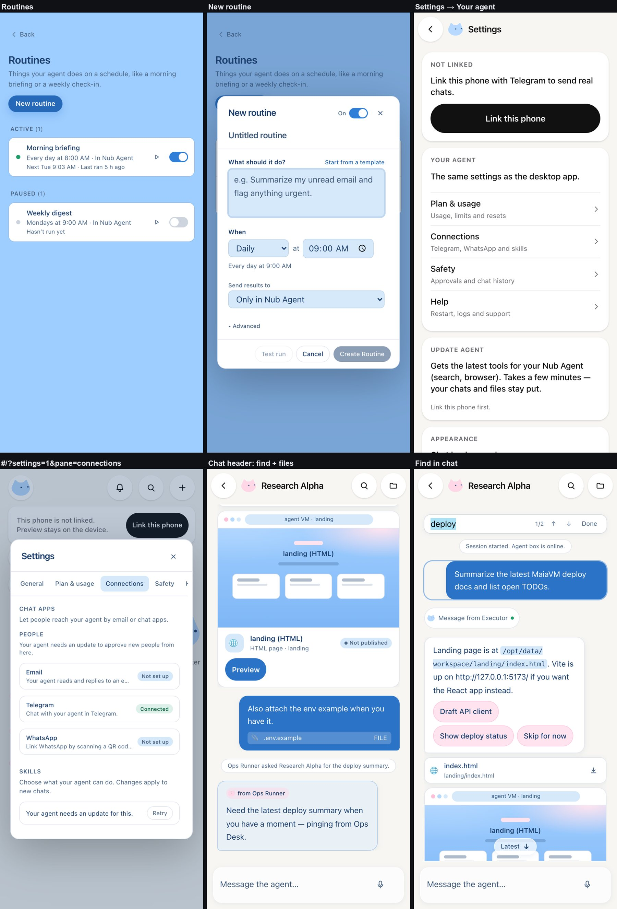
?settings=1&pane=connections link landing on Connections, the chat header's Find and Files buttons, and Find in chat at 1/2 matches with a "Done" button.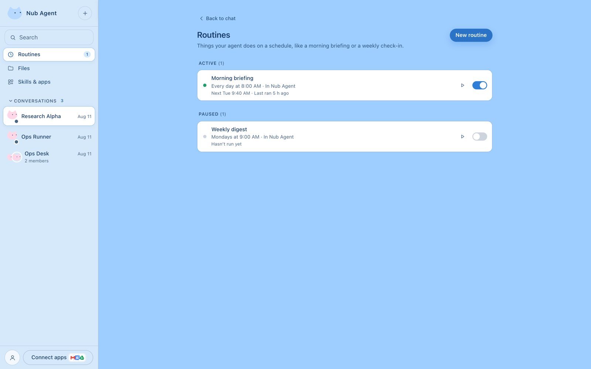
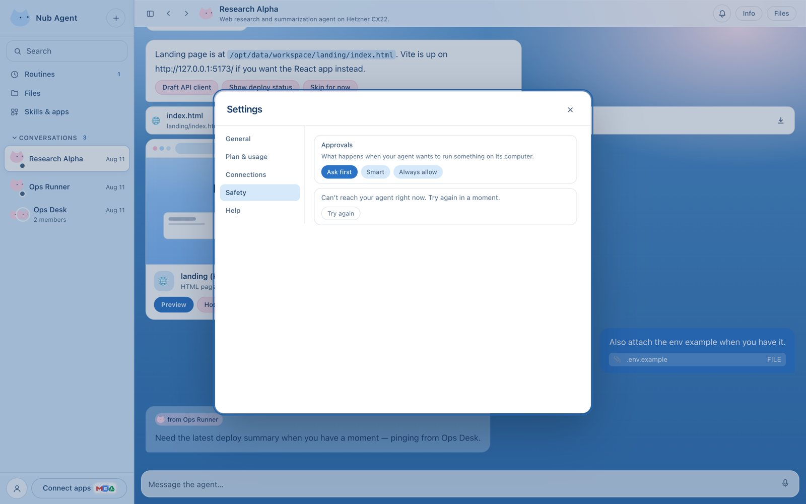
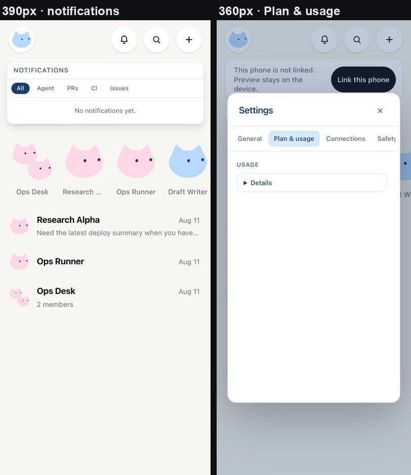
Test results
Three layers: the repo's unit and Electron suites, the TypeScript build, and the browser harness driving the real app with a touch-enabled phone viewport. Each check is a promise a user relies on; "measured" is what the harness read. This table is generated from the harness reports by tools/blueprint/build-report.mjs.
| Area | Check | Measured | Result |
|---|
Before pass 1
The core parity script, run before any phone changes, passed 8 of 27 checks. Three of those eight passed only because their screen never opened (a "fits 390px" check on a screen that wasn't there). Those checks now require the screen to be open first.
Repo suites and build
| Suite | Result | Notes |
|---|---|---|
| Vitest unit | 3,643 passed · 1 expected fail · 1 skipped · 1 todo | 391 files, on fix/host-modal-note (#269). One flake is named and fixed (#227, below); three full runs after it were clean. Pass 3 also saw one run under load fail 4 tests in markdown-lists.test.tsx, which hasn't recurred. |
| Vitest Electron | 435 passed | 32 files |
TypeScript (tsc -b) | 0 errors | |
Web build (vite build --mode web) | ok · bundle budget 9/9 | Entry chunk 13 bytes smaller than before pass 1; 0 chunks contain demo data or a personal path |
Performance
| Measure | Value | How it was measured |
|---|---|---|
Phone boot chunk (MobileApp-*.js) | 46,140 → 54,837 → 59,953 → 61,181 B | Production web build before pass 1 and after each pass; 17.4 KB gzipped now. New screens load on demand. |
| Phone: load to home list | {{homeReadyMs}} ms | Navigate, clear storage, reload, tap "Preview without linking", first row visible (dev server, includes the 450 ms boot splash) |
| Desktop: load to chat list | {{desktopReadyMs}} ms | Navigate, clear storage, reload, the first chat name visible (dev server). Pass 3 measured 486 ms against the sidebar Routines button, which no longer exists, so the two numbers aren't comparable. |
Fixed
In pass 3
| Issue | Cause | Fix |
|---|---|---|
| Routines page description, back link and group headings measured 3.61:1 on the light sky canvas (desktop and phone) | Text straight on the canvas used the muted ink meant for white cards | --ca-ink-soft on the canvas: 4.83:1; the sweep and the themes script both measure it |
| The task board's "assign…" field showed a light box in dark mode and overflowed on touch screens | No text colour, a tinted background, and a 64px box holding the 16px touch font | Theme colours, a muted placeholder, and a wider box on touch screens |
| The phone had no theme setting of its own | Only desktop Settings → General had it | Light / Dark in Settings → Appearance (MobileSettings.tsx) |
| This report said tablets showed stretched phone screens | A claim made from a screenshot, not a measurement | Measured: the 640px column rule already applies; corrected above |
In pass 2
| Issue | Cause | Fix |
|---|---|---|
| Jumping to a search result left the message 124px below the bottom of the phone screen | The chat scrolled once; cards above the message then finished laying out and pushed it down | ChatPanel re-centres the target at 250, 600 and 1,200 ms, stopping as soon as the user scrolls; the harness checks the message ends on screen |
| The task board showed one 224px column at a time on a phone, titles cut | Columns sat in a sideways strip | Below 640px columns stack full width and empty ones hide (KanbanPanel.tsx) |
| Chat history rows squeezed titles to "Book a table for…" | Rename, Export and Delete sat beside the title | On a phone the actions sit under the title (ChatHistoryPanel.tsx) |
| Search results showed "⌘1" hints on a phone, and the card ran edge to edge | Desktop keyboard hints and a full-width card | Hints hide below 640px, the card keeps a 12px margin; desktop keeps both hints and width |
| Home shortcuts could sit half off screen | A sideways-scrolling row | The row wraps; the harness checks every shortcut is fully on screen |
| The new demo fixtures reached production chunks (inert, but dead weight) | The demo routes were bundled with the code that calls them | Every fixture is behind import.meta.env.PROD, so the bundler drops it; the build check finds 0 chunks with demo data |
In pass 1
| Issue | Cause | Fix |
|---|---|---|
| The Files title and default folder showed a developer's own macOS home path, for every unlinked user on web and desktop | filesCwdWhenLinked fell back to a hardcoded /Users/… literal, which shipped in the bundle | Fall back to the agent workspace; a test forbids a personal path (src/lib/nub-vm.ts) |
| "See usage" on the usage-limit banner did nothing on a phone | Only App.tsx listened for nub:open-settings | The phone shell listens and opens the requested pane |
| Screen readers heard the sidebar's Routines button as "Routines1" | The count's aria-label sat on a span, which accessible names ignore | The button is named "Routines, 1 active" (Sidebar.tsx) |
| Find in chat's match count was silent to screen readers, and closed with "Esc" on a phone | No live region; a desktop key hint used as the label | aria-live="polite"; the button reads "Done" in the phone shell |
| Harness: cascading failures and one run against another project's app | "Back to home" ignored open dialogs; another dev server took the port | backHome closes dialogs first; the harness has its own port and checks the page title |
Gap loop new
A self-paced loop that finds one provable gap at a time, fixes it on its own loop/<slug> branch and opens a PR. When the gap shows up in the browser, a harness script reproduces it first: it has to fail before the fix and pass after. The loop's running log is docs/loop-ledger.md.
| Gap | Cause | Fix and evidence | PR |
|---|---|---|---|
| Tapping a quick-reply chip ("Draft API client" in the demo) posted a bubble reading "[choice:c1] Draft API client", and the demo's canned reply quoted the token too. The chips stayed live, so each tap sent the same pick again. | The pick is sent as [choice:<id>] <label>, and displayUserPrompt (peer-roster.ts) never removed the prefix. The chips (ChatPanel.tsx) had no answered state. | The bubble shows the label, and the demo reply quotes it. A message's chips are disabled once a later message picked one of them; moving on without picking leaves them live. tools/blueprint/quick-reply.mjs (desktop and phone): 1/5 before, {{quick-reply}} after. A unit test fails without the fix. Only the demo fixture carries choices today. | #263 |
| On the task board of a linked agent with more than one board, switching boards while the first one was still loading could fill the new board with the old board's tasks, if the old answer arrived last. | KanbanPanel.tsx's refresh set whatever list answered, with no staleness guard. | Each refresh is numbered, and only the newest may land. A unit test in kanban-panel-hosted.test.tsx holds the first board's list until after the switch. It fails without the fix. The demo has one board, so the browser can't show it. | #262 |
| For a linked agent, Agent info's Resize / Schedule row treated a refused resize as done. The confirm step cleared and nothing changed, with no message. The same happened for a refused cancel, and for a resize queued until the agent was idle. | AgentInfo.tsx ignored the false that scheduleResize and cancelResize return when the platform says no. | A refusal shows "Couldn't schedule the resize. Try again." (or "Couldn't cancel…") as an alert and keeps the chosen plan and time. A later success clears it. A unit test in agent-info-resize.test.tsx fails without the fix. Linked agents only, so the demo can't show it. | #261 |
| On the task board, breaking down task A and then task B brought A's "Break this down" back while A was still running, so it could be sent twice. A finishing then cleared B's "Breaking down…". Done and Assign shared the same slot. Separately, a failed attachments load stayed on screen after a retry succeeded. | KanbanPanel.tsx kept one in-flight slot for "Break this down" and one for Done and Assign. The attachments error was set on failure and never cleared. | In-flight work is tracked per task in sets (plus create and swarm), and a press on a task already in flight is ignored. A retry starts clean, and a success clears the error. Two unit tests in kanban-panel-hosted.test.tsx fail without the fix. The demo answers its task routes at once, so the browser can't show the race. | #260 |
| On phone and web sign-in you can paste your own code while the screen is still getting one. When that slow request answered, a fresh code replaced yours. If it failed instead, an error replaced the wait and your code stopped being checked. | Neither MobileConnect.tsx's nor WebConnect.tsx's start() checked whether its answer was still wanted. TelegramConnect already guards with startSeq. | Each start is numbered, a pasted code bumps the number, and a late answer is dropped. tools/blueprint/paste-race.mjs answers the start route after 3 seconds, on the phone in the demo and on the web against a production build: 1/5 before (the screen showed ZZZZ-ZZZZ, or an error), {{paste-race}} after. Unit tests fail without the fix. | #259 |
| Three problems on the sign-in screens. A request that never reached the server showed the browser's own words ("Failed to fetch") on web and phone. On the web error screen, typing a code lost three of every four keystrokes: "AB3D" left "A". And on the web, "Use this code" with a mistyped code did nothing visible while waiting. | Both start()s showed err.message. The web error's inline ref callback ran on every render and pulled focus out of the code box. The paste error was only drawn on the error screen (WebConnect.tsx). | A shared signInErrorMessage() says "Can't reach Nub right now…" or "Nub took too long to answer…", and keeps any message the server wrote. The error is focused once, when it appears. A bad code shows an alert under the box, as on the phone. tools/blueprint/sign-in-screens.mjs runs its web part against a production build and its phone part in the demo: 1/5 before, {{sign-in-screens}} after. Unit tests cover the helper and both web fixes. | #258 |
| "Connect with Telegram" (what "New agent" opens while unlinked) said it was modal but left focus on the page behind it. Tab walked the dimmed sidebar, typing went into the composer, and screen readers didn't hear its error. | TelegramConnect.tsx set aria-modal and had no focus handling at all, unlike AppModal. | It takes focus on open, wraps Tab inside, gives focus back on close, and its error is role="alert". tools/blueprint/telegram-focus.mjs: 1/5 before (8 of 10 Tabs landed behind it), {{telegram-focus}} after. Two unit tests fail without the fix. | #257 |
| On the web, a one-second network blip (a Wi-Fi handoff, a laptop waking up) during sign-in or while redeeming an invite ended it at once with "Lost connection while waiting". The give-up was meant to take about 30 seconds of failed polls. | WebConnect.tsx and InviteRedeem.tsx kept the failed-poll count in state, as a dependency of the poll effect. Every failure re-ran the effect, which polls again at once, so all 15 failures landed within milliseconds. | The count is a ref, so failures happen at the poll interval. The existing outage test only passed because of the bug: one 25-second fake-timer jump fires a couple of ticks, and the cascade did the rest. It now advances a second at a time. New tests: a one-second blip makes at most 2 polls and shows no error (before: 30 and 16 polls), and a long outage still says so. Not drivable in the demo (production web sign-in, and the real invite server). | #256 |
| On the phone with a keyboard (a tablet, a keyboard case, a Chromebook), a chat row's long-press menu (Pin, Mark as unread, Hide, Delete) never took focus, and Esc didn't close it. | MobileHome.tsx handled Esc only for the compose sheet, and the menu sheet didn't manage focus. | The menu focuses its first item, moves with the arrow keys, closes on Esc the way Cancel does, and gives focus back to the row. tools/blueprint/phone-row-menu.mjs: 2/5 before, {{phone-row-menu}} after. A unit test in home-menu-and-shortcuts.test.tsx fails without the fix. | #255 |
| A message's right-click menu (react, reply, copy, edit, ask again) couldn't be used from the keyboard. It never took focus, Esc didn't close it, and screen readers heard its items as plain buttons. With Agent info open, Esc closed Info behind it. | MessageActions.tsx rendered role="menu" with plain buttons and only an outside-click listener. The menu and the reaction picker lacked the data-esc-layer marker (#242). | The menu focuses its first item, moves with the arrow keys and Home/End, closes on Esc or Tab, and gives focus back unless an item moved it on purpose. Its items are menuitems, and the menu and the picker carry data-esc-layer. tools/blueprint/message-menu.mjs: 1/6 before, {{message-menu}} after. A unit test fails without the fix. | #254 |
| Tabbing through a chat opened each message's action toolbar (react, reply, copy) for good. The bars piled up over the messages above them, and stayed after focus moved to the composer. | MessageActions.tsx set the toolbar's hover state on focus, and only the pointer leaving cleared it. | A blur that leaves the message hides its bar, unless the pointer is still on it or its picker or menu is open. tools/blueprint/message-toolbar.mjs: 2/4 before (two bars stuck, still up with focus in the composer), {{message-toolbar}} after. Hover still shows and hides the bar. A unit test in message-actions.test.tsx fails without the fix. | #252 |
Typing /new (New conversation) in full and pressing Enter ran /new-agent. That opened the agent creator on desktop ("Connect with Telegram" on the web while unlinked), and sent the phone to Home. | The slash menu (ChatPanel.tsx) matches by prefix and APP_SLASH lists /new-agent first. The highlight resets to the top row on every keystroke, so Enter ran it. | A command typed out in full sorts first, and prefixes keep list order. tools/blueprint/slash-exact.mjs: 3/5 before, {{slash-exact}} after. A unit test in chat-widgets.test.tsx fails without the fix. | #251 |
| While the agent waited on a permission or a question, any Esc answered "Deny", including one used to close the slash-command menu, the @mention picker, the reply pill or a menu on screen. Closing a menu also refused the agent's request. | ChatPanel.tsx's window-level keydown denies on Escape and ignored whether the key was already handled. The slash menu's own Esc branch didn't even mark it handled. | The listener skips an Esc that was already handled (defaultPrevented) or while a [data-esc-layer] layer is open, and the slash menu's Esc marks itself handled. The demo never raises a permission request, so two unit tests in chat-widgets.test.tsx are the evidence. They fail without the fix, and the plain "Esc denies" test still passes. This PR also adds layers-on-top.mjs: fourteen floating layers, desktop and phone, hit-tested at five points each. It's {{layers-on-top}}, and with #248's header fix reverted it fails exactly the desktop bell list. | #249 |
| On the desktop-width web app and desktop, the notifications bell opened an invisible list. It was drawn under the chat, with or without Agent info open, so notifications could only be read on the phone. Separately, screen readers never heard how many were unread. | The top bar (TopBar.tsx) is .nub-glass. Its backdrop blur makes it a stacking context of its own, and with no z-index the chat area painted after it covered everything below the bar, the bell's list included. The bell's aria-label "Notifications" replaced the badge's text. Earlier checks missed the first bug: bell-esc reads aria-expanded and the sweep measures the list's box, but neither hit-tests it. | The header is relative z-20. Modals are portaled to the page body at z-50 and stay above it. The bell's name says "Notifications, 2 unread", and the badge is aria-hidden. tools/blueprint/bell-list.mjs seeds two unread notifications and hit-tests four points inside the open list: 3/8 before (0/4 points on desktop, even with Info open), {{bell-list}} after. Unit tests guard the header's z-index and the label. Found while writing the count check: a screenshot showed the bell "open" with nothing under it. | #248 |
| With a linked agent, open the notifications bell and click "Mark all read" straight away: when the server's answer to the refresh the bell started came back, the unread badge returned. It stayed until a later poll, or for good if the mark-read call had failed. | That refresh left before the read reached the server, so it answered read: false. mergeNotifications (notifications.ts) let the server copy win whenever it stated read. | Read is sticky in the merge: an item read on this device stays read, and read on another device still arrives from the server. The demo can't show this (its notifications probe says unsupported), so two unit tests are the evidence: the merge rule, and the bell with a held refresh. Both fail without the fix. | #246 |
| In the Files panel (desktop and phone), Refresh wiped what was typed in the search box and showed the whole folder again. | FilesPanel.tsx cleared the search inside the listing effect, which Refresh re-runs to reload the folder. | Clearing now has its own effect, keyed on the panel opening and the folder. A reopen or another folder still starts with an empty search, and Refresh keeps it. tools/blueprint/files-refresh.mjs: 3/5 before, {{files-refresh}} after. A unit test in files-panel.test.tsx fails without the fix. | #245 |
| On the Routines page (desktop and phone), Space on a routine's pause switch dropped keyboard focus to the page. The next Tab started over from the top, and a second Space did nothing. | The switch was disabled while the change was sent, and a focused element that becomes disabled loses focus. The row then moved between the Active and Paused lists, which remounts it (RoutinesPage.tsx). | PillSwitch gains a busy state (aria-busy, aria-disabled, clicks ignored, still focusable) that the row uses instead of disabled. The row puts focus back on its switch in its new place when the switch had it. tools/blueprint/routine-switch-focus.mjs: 1/5 before, {{routine-switch-focus}} after, on desktop and the phone. A unit test in routines-page.test.tsx fails without the fix. | #243 |
| With Agent info, Files or Routines open, Esc closed that panel and left the notifications list, an agent's profile card or a notification's detail drawer on screen. Focus stayed inside the list. | The same mechanism as #229's sidebar layers. App.tsx's capture-phase Esc chain stops the key at the side panels, and these three close themselves in bubble-phase listeners (NotificationsBell.tsx, AgentProfileCard.tsx, NotificationDetail.tsx). The bell-esc script only tested with no panel open. | #229's data-sidebar-layer is now a general data-esc-layer, set on all six layers. The app's Esc chain yields to it just below ⌘K search, which stays topmost. tools/blueprint/esc-layers.mjs: 2/5 before, {{esc-layers}} after. The drawer can't be driven in the demo (no notifications), so unit tests check the markers. Three fail without the fix. | #242 |
| In the routine editor, "Save & run now" saves, starts a run and keeps the editor open on Results. A second Save in the same sitting could be silently dropped. Turn Active off, "Save & run now", turn Active back on, Save: the routine stayed Paused on the agent and never ran. A time changed and then put back stayed changed. The button also kept offering "Save & run now" for edits it had already saved. | App.tsx (and the phone's MobileApp.tsx) passed the routine as it was when the editor opened to every save. upsertRoutine only sends a pause or resume, or a schedule, when it differs from that copy, and the editor's own unsaved-edits check (RoutineEditor.tsx) compared against it too. | The editor keeps a baseline: the routine as opened, then what its own save returned. It passes the baseline to onSave and checks unsaved edits against it. Both shells return the saved routine. tools/blueprint/routine-resave.mjs: 3/6 before (the demo agent really kept the routine paused, at 07:00), {{routine-resave}} after. A unit test in routine-editor.test.tsx fails without the fix. | #240 |
The phone's dark mode was swept for contrast (themes.mjs), but the desktop-width app's wasn't. A new sweep found one failure on six screens: the "from Ops Runner" chip on a chat bubble read 1.74:1 in dark mode, navy on grey. @mention chips use the same colours. | Both chips (agent-identity.tsx, MessageBody.tsx) draw the agent's eye colour on a 45% tint of its body colour. Over a white bubble that's fine (6.96:1). Over a near-black bubble the tint goes mid-grey and navy disappears. | In dark mode the chips tint toward the card (28% body) and name the agent in ink: 8.4:1, and near 7:1 even for a white body. Light mode is unchanged. tools/blueprint/desktop-themes.mjs measures every visible text on chat, Agent info, ⌘K, a file preview, notifications and Connect apps in both themes. #240 added Routines, the routine editor and Connect apps' Agents, and all three pass. It composites translucent layers and reads color(srgb …) from color-mix(), and the chip has its own check. 11/15 before, {{desktop-themes}} after. Three unit tests fail without the fix. Settings isn't in this sweep: the Settings loop owns those files. | #239 |
| In dark mode the app's toast ("Link copied", "That conversation isn't available…", plugin messages) was white text on a near-white pill, at 1.09:1. Screen readers didn't announce it either. | The toast in App.tsx was bg-[var(--ca-ink)] text-white. --ca-ink is dark navy in light mode but #f5f5f5 in dark mode. The plugin UI's primary Button used the same pairing. The toast was mounted only while it had text, with no live region. | Text on an ink fill now takes --ca-card, which flips the other way: 17.32:1 in dark, and light unchanged at 10.92:1. The toast sits in an always-mounted role="status" region. tools/blueprint/toast-contrast.mjs: 2/4 before, {{toast-contrast}} after. A source scan (ink-fill-text.test.ts) fails on both old pairings. The Settings loop session found this one. | #237 |
| Mid-way through "Create group", a roster sync or an agent's status change put the typed name and picked members back to the defaults, and moved focus back to Name. | GroupEditor.tsx derived its default members from props.agents with useMemo, and its reset-on-open effect depended on that. Every new agents array re-ran the reset while the dialog was open. RoutineEditor already reads its defaults at open only. | The defaults are read at open, through a ref. A unit test in group-editor.test.tsx hands down a fresh copy of the same roster mid-edit. It fails without the fix, and reopening still starts fresh. No browser check: the demo's roster doesn't change while the dialog is open. | #236 |
| "Delete conversation?" from a row's menu quoted the chat's stored session title ("Summarize the latest MaiaVM deploy docs"). The row the user right-clicked reads "Research Alpha", so the question named something they never saw. A chat with no stored title got empty quotes. | The menu path in Sidebar.tsx passed conv.title. The Hidden chats path already used conversationTitle(), which gives the agent or group name the row shows. | The menu path uses conversationTitle() too. delete-confirm.mjs gained a check: 9/10 before, {{delete-confirm}} after. A unit test in sidebar-delete.test.tsx fails without the fix. | #235 |
| Close ⌘K search with Esc or a click outside, and keyboard focus fell to the page itself, so the next keystrokes went nowhere: someone who searched from the composer had to click back in. While search was open, Tab walked out of it into the dimmed page behind. | CommandPalette.tsx rendered nothing on close and never saved or restored focus, had no Tab trap, and didn't set aria-modal. AppModal does all three. | Closing returns focus to where it was, but only when focus would otherwise be lost, so an editor a pick opens keeps its own focus. Tab and Shift+Tab wrap between the input and the category pills, and the dialog is aria-modal. tools/blueprint/palette-focus.mjs: 2/8 before (Tab reached the sidebar's "+ New" and chat rows), {{palette-focus}} after. Two unit tests fail without the fix. | #233 |
| In ⌘K search, typing "ops runner" and pressing Enter quickly left you on Research Alpha. On the Agents or Routines tab, a quick search-and-Enter opened a create flow ("New Agent", which on the web is "Connect with Telegram", or a blank "Create Routine") instead of what you typed. ⌘1–9 did the same. | Results follow a copy of the query debounced by 150 ms, but Enter and ⌘N ran the selected row straight away (CommandPalette.tsx). That row came from the previous query, and on those tabs it's the pinned create row. | When the query is ahead of the debounce, Enter or ⌘N flushes it and runs the pick once the rows match what was typed. tools/blueprint/palette-enter.mjs: 2/6 before, {{palette-enter}} after. Two unit tests in command-palette.test.tsx fail without the fix. Server transcript hits still arrive after the debounce, so a fast Enter picks from local results. | #232 |
| With a real agent, opening file A (a slow read) and then file B (a fast one) could show A's text in the preview titled B. Edit, then Save, would then write A's text into B. The git badge could show A's status too. | loadContent in FilePreview.tsx set the text from whichever read answered last, and the statPath call wasn't cancelled when the file changed. The Diff and sheet panes in the same file already guarded against this. | Each load carries a sequence number, bumped on every file change, and a late answer is dropped. The stat call is cancelled on change. The demo reads files synchronously, so the browser can't show the race. A unit test in file-preview-stack.test.tsx holds A's read until B has loaded. It fails without the fix (A's text appears under B) and passes with it. preview-guard and phone-preview still pass. | #230 |
| On desktop and the desktop-width web app, "Delete conversation?" opens with Cancel focused, but Enter on Cancel deleted the chat. The dialog says the delete is synced everywhere and can't be undone. Separately, with Agent info or Files open, Esc closed that panel behind the dialog (or the row menu, or Hidden chats) and left the dialog up. | A keydown handler on the whole dialog turned any Enter into a delete and cancelled the focused button's own click (Sidebar.tsx). The sidebar's layers close on Esc in a bubble-phase listener, and App.tsx's capture-phase Esc chain closed a side panel and stopped the key before it got there. | The dialog-level Enter handler is gone: Enter presses the focused button, and Tab reaches Delete. The row menu, Hidden chats and the dialog are marked data-sidebar-layer (since #242, data-esc-layer), and the app's Esc chain yields to them, as it does for the picture viewer. tools/blueprint/delete-confirm.mjs: 6/9 before (that run really deleted Research Alpha), 9/9 after. It has 10 checks since #235. Tab-then-Enter and a click on Delete still delete. Two unit tests in sidebar-delete.test.tsx fail without the fix. The phone asks through window.confirm and wasn't affected. | #229 |
A green CI run failed anyway: on #223's first run all 1,900 affected tests passed, then Vitest reported an unhandled EnvironmentTeardownError ("Cannot load platform.ts … after the environment was torn down") and failed the job. The rerun passed. This is likely the unnamed file the loop saw fail 1 run in 7. | useAgentRuntime's audit-log effect lazily imports agent-rest on mount, which pulls in vm-fs-http, then mobile/session, then platform. store-structural.test.tsx mounts the hook only to count renders. On a slow runner the chain was still loading when the file's jsdom environment was torn down. | The test stubs agent-rest, as it already stubs active-transport. With a 5 ms delay forced on that load, 3 of 6 runs hit the same error before the stub and 0 of 6 after. Three full unit runs after it were clean: 3,589 passed each, no unhandled errors. Test-only, so there is no browser check. | #227 |
| On the desktop-width web app (and desktop), after closing a file preview with unsaved edits and choosing Discard, the next link to that file (or any route naming a preview) asked "Discard unsaved changes?" again. Choosing Cancel, the natural answer with nothing open, blocked the file from opening. | FilePreview.tsx publishes its leave guard to the app (guardRef) during render, but returned early when closed, before that line. The app kept the last open render's confirmLeave, whose closure still held the discarded draft, and asked it on every route change (App.tsx onHashChange). | The guard is published above the early return, and is null while the preview is closed. tools/blueprint/preview-guard.mjs: 7/9 before (the stale prompt, then the file not opening), {{preview-guard}} after. It also checks that fresh edits still guard Close, Esc and Back, and that Cancel keeps the draft and the URL. A unit test in file-preview-stack.test.tsx fails without the fix. | #226 |
| Once #221 was live, the PostHog project's own settings switched on more than masked replays and errors. Console output went into replays, which masking doesn't touch. Heatmaps sent click data. Network timing, web vitals, Logs and the support chat widget were also switched on. | The setup wizard turned these on in the project. With no value set in analytics.ts, posthog-js follows the project's remote config. Read from the live config file. | analytics.ts now pins each one off: enable_recording_console_log, capture_performance, capture_heatmaps, logs.captureConsoleLogs, disable_conversations. replay-masking.mjs now serves the live project's config and gained 5 checks (15 in all): 13/15 on main (console output recorded, $$heatmap events sent), {{replay-masking}} after. The network-timing check also passed before: the harness saw no network events, so it guards against a regression but didn't prove a leak. A new check confirms an uncaught error still reaches error tracking. | #223 |
| PostHog's setup wizard turned session replays on with nothing hidden. In a chat app, that would have recorded people's messages. Once masked, the replays still never started. | The wizard dropped the masking options from analytics.ts. Replays then needed two more things: the project's remote config, which says replay is on (fetched from us-assets.i.posthog.com, which the CSP refused), and the full recorder bundle (posthog-js/dist/posthog-recorder; dist/recorder is rrweb alone and asked for a script from PostHog). | Replays hide every word, text box and picture (maskTextSelector: '*', all inputs, img, video, canvas, iframe, picture blocked). Only connect-src gains the config host; script-src is unchanged. Feature flags stay off. tools/blueprint/replay-masking.mjs drives a production build with a dummy key, answers PostHog itself and unpacks every recording: 6/10 with masking off (11 of 11 on-screen words, a planted message, typed text and alt text all in the replay), {{replay-masking}} after. | #221 |
| On desktop, Chat history reopened with the last search still typed in and the list still filtered to it, with "Show more" hidden. Search (⌘K) and the Marketplace both start empty. | ChatHistoryPanel.tsx stays mounted on desktop after its first open, and never reset its query. The phone unmounts it, so it was never affected. | Each open clears the query, and the stale query's debounced search is cancelled before it fires. Desktop Chat history needs a linked agent, which the demo doesn't have, so a unit test in chat-history-panel.test.tsx is the evidence. It fails without the fix and checks that no extra search goes out. The phone path stays covered by mobile-reach (26/26). | #216 |
| On desktop and the phone, Esc didn't close the notifications list. It only closed on a click outside, so a keyboard user inside it had to Tab back to the bell. | NotificationsBell.tsx listened for outside clicks only. | While the list is open, Esc closes it and puts focus back on the bell. The key stops there, so a chat-level Esc (find bar, draft) doesn't also fire. tools/blueprint/bell-esc.mjs: 4/8 before, {{bell-esc}} after, plus a unit test in notifications-bell.test.tsx that fails without the fix. | #215 |
| For a linked (VM) agent, Agent info's routine summary ("2 routines · 2 active") went stale after a routine was saved from its own "+ New", while the Connect apps tile and the Routines page showed the new count. | The panel fetched the VM's cron jobs only when it opened, the agent changed or Retry was pressed (AgentInfo.tsx). | It re-counts when the app's routine list changes. It keys on the routines' ids and on/off state, so a fresh copy of the same list doesn't refetch. The demo can't show this: its agents aren't VM agents (see Limits), so a unit test in agent-info-routines.test.tsx is the evidence. It fails without the fix ("1 routine" stays) and passes with it. | #214 |
On the desktop-width web app, Settings reopened on the last tab (say Connections) while the URL said a bare ?settings=1, which names General. A reload or a shared link then landed on a different tab than the one on screen. App.tsx promises "the URL always names the pane on screen". | Settings stays mounted between opens, and its tab state (SettingsStub.tsx) only changed when a pane was requested. | A bare open (sidebar, ⌘,) now starts on General, as a fresh load of ?settings=1 does. The reset happens only on the open transition, so the dev-only Plugins tab, which reports no pane, isn't kicked back. tools/blueprint/web-settings.mjs: 3/5 before, {{web-settings}} after, plus a unit test in settings-fold-in.test.tsx that fails without the fix. | #213 |
| On the desktop-width web app, with Agent info open, Esc in Settings closed the Info panel behind it and left Settings on screen. The same went for Kanban, Chat history and the group editor. | The app's Esc handler (App.tsx, capture phase) checked the side panels (Files, Info, tools) before the modals, and stopped the key there. | The modals now come first: the Kanban and Settings branches moved above the side panels, and Chat history and the group editor got their own. A first try that yielded to any aria-modal in the page broke Esc off the Routines page in a unit test: a closing modal's exit animation still counts. So the fix uses explicit branches. tools/blueprint/web-esc.mjs: 3/4 before, {{web-esc}} after. Only the Settings case is driven, because the demo can't open Chat history (linked only) and the group editor didn't open from search. | #212 |
| On the phone, the Files tabs (All · Photos · Docs · Sites) were 26px tall. | The tab strip in FilesPanel.tsx is desktop-sized. | The tabs take .nub-touch-44, so they're 44px tall on touch screens. They sit in a segmented control, so they grow instead of borrowing a hit area. phone-touch.mjs gained 2 checks (14 in all): 13/14 before, 14/14 after, and the tabs still switch. | #211 |
| On the phone, the file card under an agent reply had a 61 × 27px View pill and a 28 × 28px Download button. | The same mouse-sized desktop component (FileCard.tsx) that the earlier touch pass didn't reach. | The same two touch classes: Download grows to 44px, and View keeps its pill but answers taps across 44 × 44px. That needed position: relative on .nub-touch-hit, which the switch had only by luck. phone-touch.mjs gained 3 chat checks: 10/12 before (both new size checks failed), 12/12 after. | #210 (pass 2 of 3) |
| On the phone with a keyboard (a tablet, a keyboard case, the Android app on a Chromebook), Esc did nothing on the Routines screen, though its back link reads "Back · Esc". It also did nothing on the Files panel, which desktop closes on Esc. | The phone shell's key handler (MobileApp.tsx) only knew ⌘ and Alt shortcuts. Only modals, Hidden chats and the compose sheet handled Esc themselves. | Esc on Routines or Files takes the same history step as Back. It stands down while a modal is open, because the modal closes itself on the same key: one Esc, one layer. tools/blueprint/phone-esc.mjs: 4/7 before (the two one-layer guards and "home untouched" already held), {{phone-esc}} after. | #209 |
| On the phone, Routines' Run now (32 × 32px), pause switch (36 × 20px) and New routine (32px tall), and Files' Refresh and Close (32 × 32px), were under the 44px touch minimum. | These are desktop components the phone mounts, sized for a mouse. The phone's touch pass hadn't reached them. | Under (pointer: coarse) in the phone shell, .nub-touch-44 grows a control to 44px, and .nub-touch-hit keeps the switch's drawing but answers taps across 44 × 44px. Desktop is untouched. tools/blueprint/phone-touch.mjs hit-tests a 44px square around each control: 4/9 before, 9/9 after. Two "tap near the edge" checks passed before too, because Chrome's touch emulation adjusts near-miss taps, so the hit-area checks are the evidence. | #208 (pass 1 of 3) |
| On the phone, Back with a file preview open closed the Files panel under it and left the preview on screen. The next Back left Files for home with the preview still floating over the chat list. | The preview was plain state beside the phone's layer model (previewPath in MobileApp.tsx): it had no history entry, so a Back press popped the layer beneath it. | A user's Back with a preview open now closes the preview and restores the entry that pop took, so the layer under it stays. Pops the app makes itself are untouched. tools/blueprint/phone-preview.mjs: 2/6 before, {{phone-preview}} after. | #207 |
| On the phone, "Sign in with Telegram" in the Settings sheet (General → Your Nub account) showed "Link this phone" for a moment, then bounced back: to the sheet when it was opened from home, or to the phone's Settings screen when it was opened from there. A phone that wasn't linked couldn't start linking from Settings. | The link screen clears the open sheet as it starts. The phone's history mirror (MobileApp.tsx) turns a shallower state into history.go(-n), and the pop then adopted the entry it landed on, which still named the old screen and sheet. | A pop the mirror starts itself now keeps the state the app was heading for, and rewrites the entry it lands on to match. That fixes the class, not just this button. tools/blueprint/phone-signin.mjs: 3/6 before, {{phone-signin}} after. All 30 core phone checks and 26 reach checks still pass. | #206 |
| On desktop and the desktop-width web app, asking "Delete this routine?" and then closing the editor with Esc or Cancel left the question armed. The next routine opened with "Delete this routine? Delete / Keep" already showing, so one tap deleted it. | The editor stays mounted between opens. Its reset-on-open effect (RoutineEditor.tsx) reset every field except confirmingDelete; only "Keep" cleared it. The phone unmounts the editor, so it was never affected. | The reset also clears the question. tools/blueprint/routine-editor.mjs: 3/7 before. In that run one tap really deleted a demo routine (2 → 1). {{routine-editor}} after, plus a unit test in routine-editor.test.tsx that fails without the fix. | #205 |
On the desktop-width web app, ⌘⇧M (Plugins) and ⌘⇧W (Hermes tools) opened nothing, but wrote ?mcp=1 / ?tools=skills into the URL. The next Esc then closed that invisible panel instead of what was on screen. A shared link carrying either flag did the same. | Both panels need desktop-only capabilities (caps.vmFs, caps.localTasks). The open flags in App.tsx were set regardless, and the Esc handler and the URL read them raw. | The flags are now read through the capability, so a panel that can't render is never "open". tools/blueprint/web-panels.mjs: 1/7 before the fix, {{web-panels}} after. | #204 |
| A helper's Stop and steer did nothing on a linked agent when its turn was resumed in this tab (after a reload, or started on another device) | cancelSubagent / messageSubagent only knew turns this tab had sent | Same turn lookup as the main Stop button. Covered by a unit test only: the demo mode this harness runs doesn't use the linked-agent transport. | #203 |
| The Android update check's guards (bad hash, bad size, unreadable version) had no running tests | Their tests were left as it.todo after the guards shipped | Real tests now. With the guards switched off, 3 tests fail. Unit only, nothing to see in the browser. | #202 |
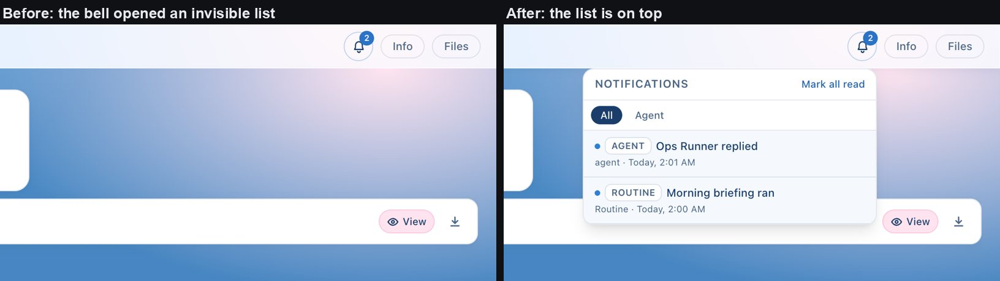
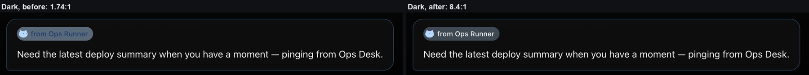
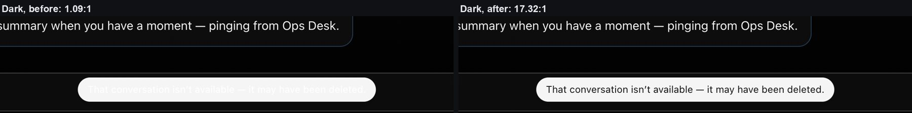
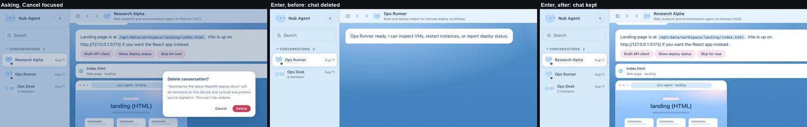
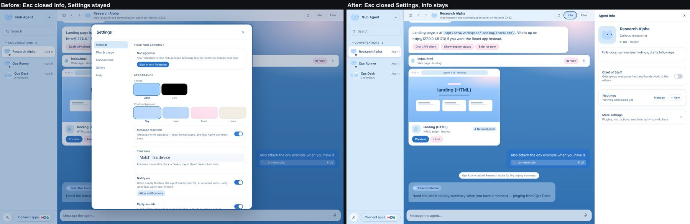
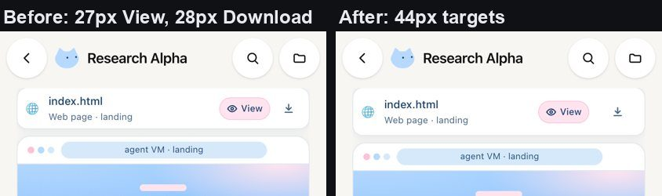
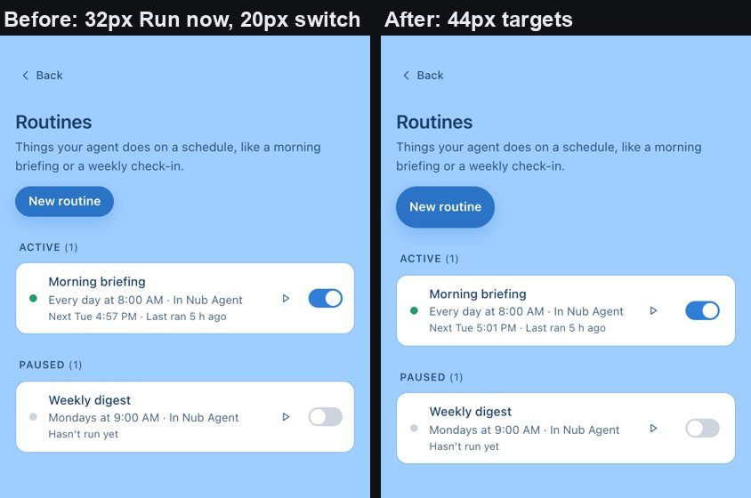
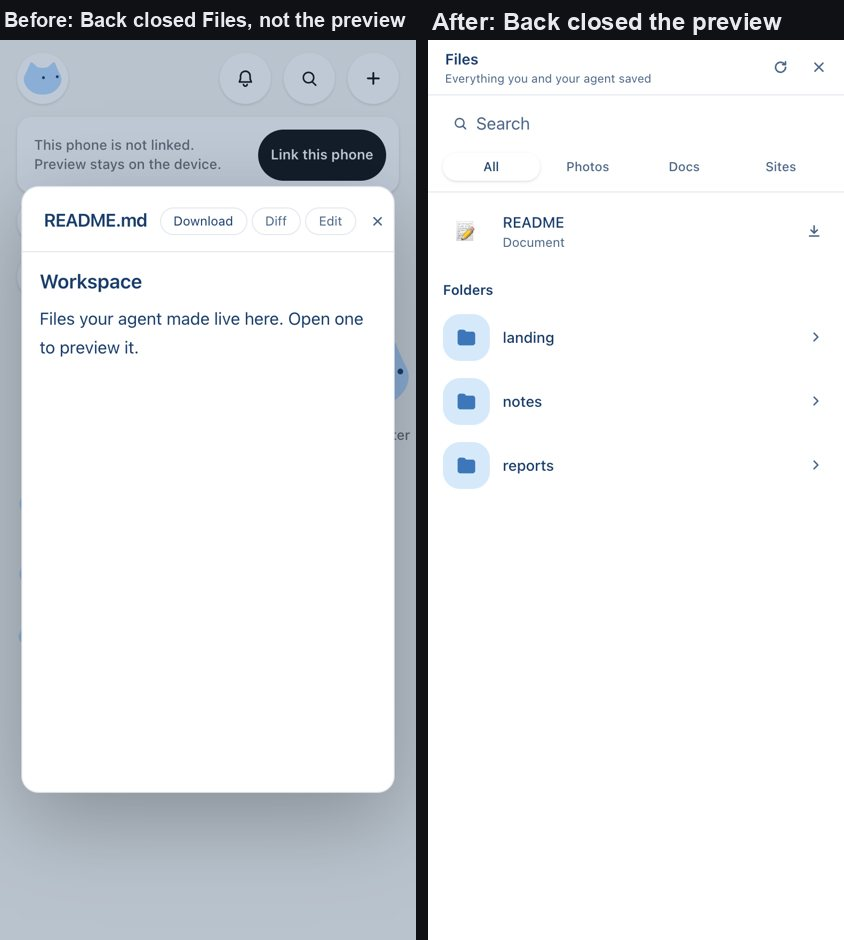
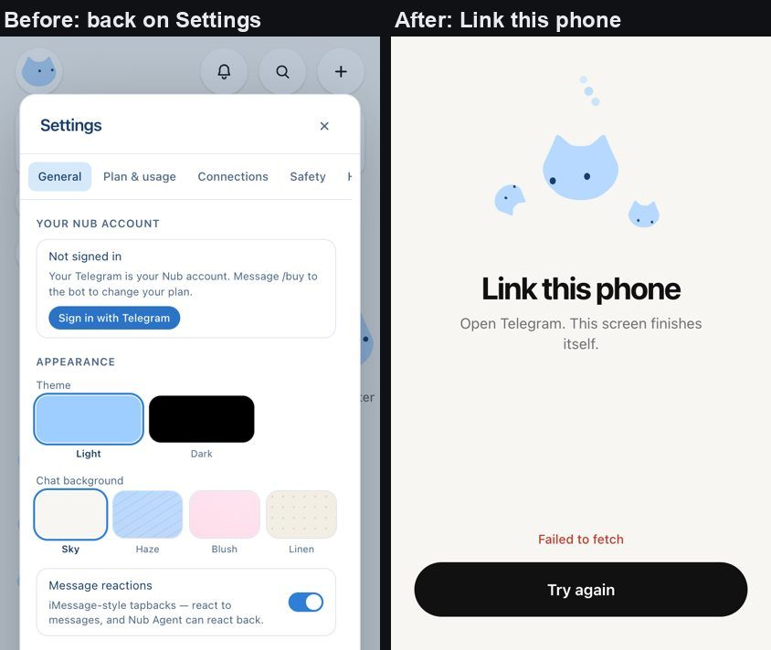
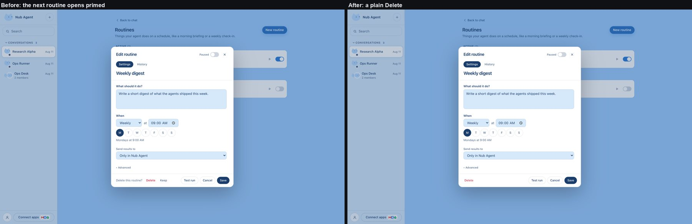
Roadmap
Everything from the earlier roadmaps is shipped: search, chat history, demo fixtures, the task board, invite links, routine recipes, Export chat, keyboard shortcuts and dark mode. What's left needs a real device, the platform team, or a design decision. Size: S under half a day, M one to two days, L most of a week.
P1 · prove it on real phones do next
P1-1 · Real devices and a linked agent
- Evidence
- Every check ran in headless Chrome against the offline demo.
- Approach
- Run the four harness scripts against a staging agent with a test account, then a manual pass on iOS Safari, Android Chrome and the Capacitor app. Keep account details off screen.
- Size
- M
P1-2 · Screen readers
- Evidence
- The harness checks accessible names, live regions and contrast, not VoiceOver or TalkBack themselves.
- Approach
- VoiceOver and TalkBack through home, search, Routines and Settings; fix focus order inside the overlays.
- Size
- M
P2 · needs the platform after P1
P2-1 · Plugins (MCP) on web and phone
- Evidence
- Plugins are desktop-only on every browser shell; the platform's plugin routes send no cross-origin headers, and plugin sign-in relies on a desktop-only callback.
- Approach
- Platform: cross-origin headers on
/api/instances/:id/mcp*. App: a browser path through the dashboard proxy, with stdio-command validation moved out of the Electron main process. - Size
- L
P3 · design calls later
P3-1 · A two-pane tablet layout
- Evidence
- Tablets get a centred 640px phone column (measured above); the list and the chat can't be side by side.
- Approach
- Decide whether tablets should get the desktop shell's split view or a phone-style two-pane home and chat above 900px, then extend the tablet checks.
- Size
- M
Run & reproduce
# offline demo app on the harness port (outside requests are blocked by the scripts) VITE_MAIAVM_MOCK=true npx vite --port 5287 --strictPort --host 127.0.0.1 & # browser harness, one after another node tools/blueprint/mobile-parity.mjs # core phone parity → blueprint-out/data/report-mobile-parity.json node tools/blueprint/mobile-reach.mjs # pass 2: search, history, tasks, recipes, files, invites, keys node tools/blueprint/themes.mjs # pass 3: dark-mode contrast, tablet column, keyboard node tools/blueprint/sweep.mjs # desktop + phone-width regressions node tools/blueprint/web-panels.mjs # gap loop: web shortcuts and links vs hidden panels node tools/blueprint/routine-editor.mjs # gap loop: the two-step routine Delete node tools/blueprint/phone-signin.mjs # gap loop: phone Sign in with Telegram from Settings node tools/blueprint/phone-preview.mjs # gap loop: phone Back with a file preview open node tools/blueprint/phone-touch.mjs # gap loop: 44px touch targets on phone Routines and Files node tools/blueprint/phone-esc.mjs # gap loop: Esc on phone Routines and Files node tools/blueprint/web-esc.mjs # gap loop: Esc closes a modal before the panel behind it node tools/blueprint/web-settings.mjs # gap loop: the Settings tab on screen matches the URL node tools/blueprint/bell-esc.mjs # gap loop: Esc closes the notifications list node tools/blueprint/preview-guard.mjs # gap loop: a closed preview's discard prompt never comes back node tools/blueprint/delete-confirm.mjs # gap loop: the sidebar's Delete conversation? dialog and Esc node tools/blueprint/palette-enter.mjs # gap loop: ⌘K Enter faster than the search debounce node tools/blueprint/palette-focus.mjs # gap loop: focus back after ⌘K, Tab stays inside node tools/blueprint/toast-contrast.mjs # gap loop: the app toast in light and dark node tools/blueprint/desktop-themes.mjs # gap loop: desktop contrast sweep, light and dark node tools/blueprint/routine-resave.mjs # gap loop: a second save after Save & run now node tools/blueprint/esc-layers.mjs # gap loop: Esc with a panel open and a small layer over it node tools/blueprint/routine-switch-focus.mjs # gap loop: keyboard focus on a routine's pause switch node tools/blueprint/files-refresh.mjs # gap loop: Refresh in Files keeps the search node tools/blueprint/bell-list.mjs # gap loop: the bell's list is on top; the unread count is announced node tools/blueprint/layers-on-top.mjs # gap loop: every floating layer is hit-tested on top node tools/blueprint/slash-exact.mjs # gap loop: a slash command typed in full runs that command node tools/blueprint/message-toolbar.mjs # gap loop: message toolbars and keyboard focus node tools/blueprint/message-menu.mjs # gap loop: the right-click message menu from the keyboard node tools/blueprint/phone-row-menu.mjs # gap loop: the phone's chat row menu with a keyboard node tools/blueprint/telegram-focus.mjs # gap loop: Connect with Telegram as a real modal # sign-in screens: the web part needs a production build on :4329 (no PostHog key needed) npx vite build --mode web --outDir /tmp/nub-web && npx vite preview --mode web --outDir /tmp/nub-web --port 4329 --strictPort --host 127.0.0.1 & node tools/blueprint/sign-in-screens.mjs node tools/blueprint/paste-race.mjs # gap loop: a pasted code vs a slow "Getting a code…" node tools/blueprint/quick-reply.mjs # gap loop: quick-reply chips node tools/blueprint/analytics-off.mjs # privacy: the demo never contacts PostHog # privacy: replays carry no words (a production build with a dummy key, served on :4319) VITE_POSTHOG_KEY=phc_localprobe0000000000000000000000000000000000 npx vite build --mode web --outDir /tmp/nub-replay npx vite preview --mode web --outDir /tmp/nub-replay --port 4319 --strictPort --host 127.0.0.1 & node tools/blueprint/replay-masking.mjs node tools/blueprint/demo-agent-info.mjs # follow-up: the demo's Agent info counts routines node tools/blueprint/walk.mjs # recorded phone tour (webm) node tools/blueprint/build-report.mjs # this page, with the test table filled from the reports # repo suites and build npx tsc -b npx vitest run --project unit npx vitest run --project electron npx vite build --mode web